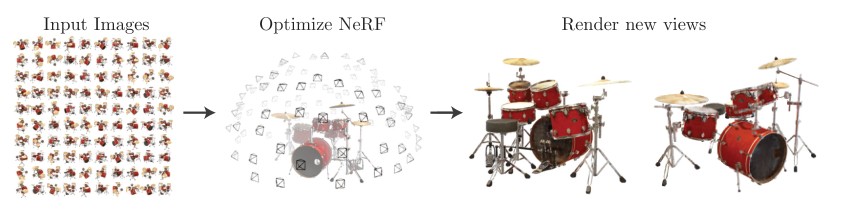
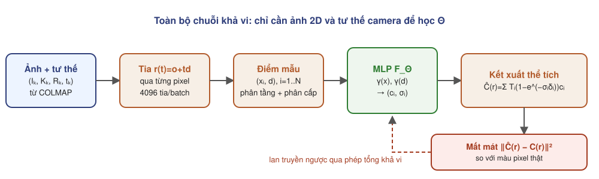
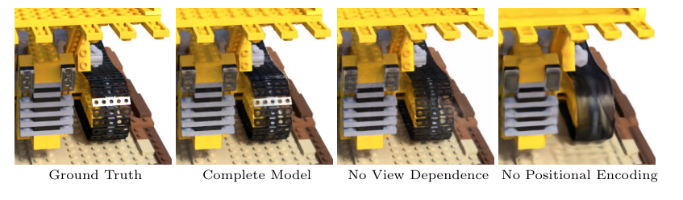
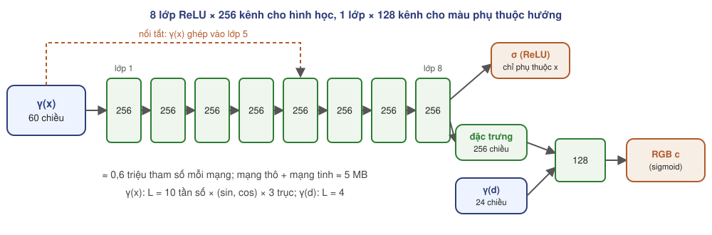
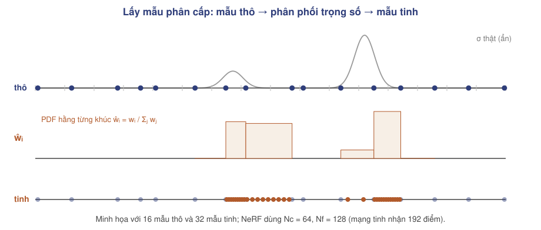
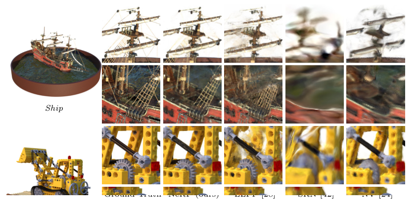
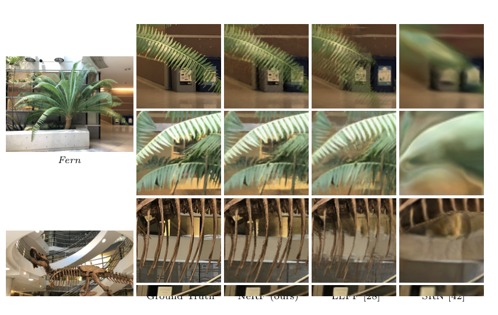
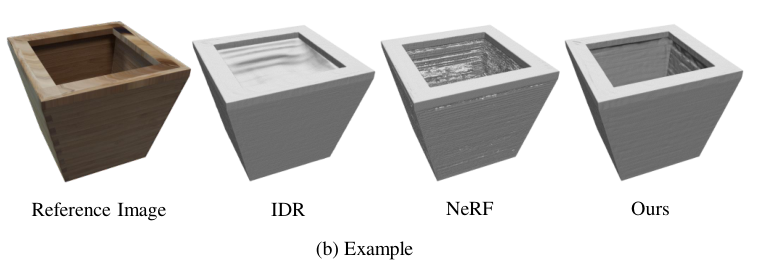

Mildenhall, Srinivasan, Tancik, Barron, Ramamoorthi, Ng · ECCV 2020
Seminar nhóm nghiên cứu tái tạo 3D · Tháng 9/2026

Tập $\{(I_k,K_k,R_k,t_k)\}_{k=1}^{M}$ gồm ảnh RGB và tham số camera.
Mỗi pixel sinh một tia $\mathbf r=(\mathbf o,\mathbf d)$ với màu quan sát $C(\mathbf r)$.
Tham số $\Theta$ của biểu diễn sao cho
Điểm phía sau bề mặt không được đóng góp màu.
Màu của vật liệu không khuếch tán (non-Lambertian) đổi theo hướng nhìn.
Dây, lưới, lá cây nhỏ hơn một voxel thô.
| Họ phương pháp | Đại diện | Biểu diễn | Điểm yếu chính |
|---|---|---|---|
| Lưới tam giác | Tối ưu mesh khả vi | đỉnh + mặt | khó thay đổi topo bằng gradient |
| Voxel học sâu | DeepVoxels, Neural Volumes (NV) | lưới $N^3$ đặc trưng | bộ nhớ $O(N^3)$, độ phân giải thấp |
| Ảnh đa mặt phẳng | LLFF | một lưới voxel cho mỗi ảnh vào | chỉ góc nhìn hướng trước; trên 15 GB mỗi cảnh |
| Bề mặt ẩn | SRN | MLP + dò tia bề mặt | ảnh mờ, chi tiết thấp |
| NeRF | — | MLP liên tục $(\mathbf x,\mathbf d)\mapsto(\mathbf c,\sigma)$ | chậm (phần E) |

MLP $F_\Theta$ thay lưới rời rạc.
Tổng có trọng số dọc tia, đạo hàm được theo $\Theta$.
Mã hóa vị trí; lấy mẫu phân cấp.
Vị trí $\mathbf x=(x,y,z)$ và hướng $(\theta,\phi)$.
Màu $\mathbf c=(r,g,b)$ và mật độ $\sigma$.
$\mathbf h(\mathbf x)$: vector đặc trưng 256 chiều của nhánh hình học.


MLP với ReLU học các hàm tần số thấp trước (spectral bias, Rahaman et al. 2019); ảnh trực tiếp từ $(x,y,z)$ bị mờ.
Áp $\gamma$ riêng cho từng tọa độ đã chuẩn hóa về $[-1,1]$.
Mỗi vòng lặp dùng một bộ mẫu ngẫu nhiên khác, nên mạng được đánh giá trên vị trí liên tục.

| Siêu tham số | Giá trị trong paper |
|---|---|
| Batch | 4096 tia; $N_c=64$, $N_f=128$ |
| Tối ưu | Adam, lr $5\times10^{-4}\to5\times10^{-5}$ (giảm mũ), $\beta_1=0{,}9$, $\beta_2=0{,}999$, $\epsilon=10^{-7}$ |
| Số vòng lặp | 100k–300k mỗi cảnh |
| Thời gian | khoảng 1–2 ngày trên một GPU NVIDIA V100 |
| Kết xuất | ảnh 800×800 (640k tia, 150–200 triệu lần gọi mạng): khoảng 30 giây trên V100 |
4 vật khuếch tán đơn giản (DeepVoxels).
8 vật dựng bằng path tracing, vật liệu phức tạp.
8 cảnh thật chụp cầm tay, nhìn hướng trước.
| Bộ dữ liệu | Nội dung | Chia tập | Độ phân giải |
|---|---|---|---|
| Diffuse Synthetic 360° | 4 vật, hình học đơn giản | 479 huấn luyện / 1000 kiểm tra | 512×512 |
| Realistic Synthetic 360° | 8 vật (lego, ship, mic, ...) | 100 / 200 | 800×800 |
| Real Forward-Facing | 8 cảnh (fern, T-rex, orchid, ...) | 20–62 ảnh, giữ 1/8 để kiểm tra | 1008×756 |
sai số từng pixel, ảnh trong $[0,1]$.
tương đồng cấu trúc cục bộ: độ sáng, tương phản, cấu trúc.
khoảng cách giữa đặc trưng mạng sâu; gần cảm nhận của người xem.
| Phương pháp | Diffuse Synthetic 360° | Realistic Synthetic 360° | Real Forward-Facing | ||||||
|---|---|---|---|---|---|---|---|---|---|
| PSNR↑ | SSIM↑ | LPIPS↓ | PSNR↑ | SSIM↑ | LPIPS↓ | PSNR↑ | SSIM↑ | LPIPS↓ | |
| SRN | 33,20 | 0,963 | 0,073 | 22,26 | 0,846 | 0,170 | 22,84 | 0,668 | 0,378 |
| NV | 29,62 | 0,929 | 0,099 | 26,05 | 0,893 | 0,160 | — | — | — |
| LLFF | 34,38 | 0,985 | 0,048 | 24,88 | 0,911 | 0,114 | 24,13 | 0,798 | 0,212 |
| NeRF | 40,15 | 0,991 | 0,023 | 31,01 | 0,947 | 0,081 | 26,50 | 0,811 | 0,250 |
| Cấu hình | Đầu vào | Số ảnh | $L$ | $(N_c,N_f)$ | PSNR↑ | SSIM↑ | LPIPS↓ |
|---|---|---|---|---|---|---|---|
| 1. Không PE, không phụ thuộc hướng, không phân cấp | xyz | 100 | — | (256, –) | 26,67 | 0,906 | 0,136 |
| 2. Không mã hóa vị trí | xyzθφ | 100 | — | (64, 128) | 28,77 | 0,924 | 0,108 |
| 3. Không phụ thuộc hướng | xyz | 100 | 10 | (64, 128) | 27,66 | 0,925 | 0,117 |
| 4. Không lấy mẫu phân cấp | xyzθφ | 100 | 10 | (256, –) | 30,06 | 0,938 | 0,109 |
| 5. Rất ít ảnh | xyzθφ | 25 | 10 | (64, 128) | 27,78 | 0,925 | 0,107 |
| 6. Ít ảnh | xyzθφ | 50 | 10 | (64, 128) | 29,79 | 0,940 | 0,096 |
| 7. Ít tần số | xyzθφ | 100 | 5 | (64, 128) | 30,59 | 0,944 | 0,088 |
| 8. Nhiều tần số | xyzθφ | 100 | 15 | (64, 128) | 30,81 | 0,946 | 0,096 |
| 9. Mô hình đầy đủ | xyzθφ | 100 | 10 | (64, 128) | 31,01 | 0,947 | 0,081 |


| Phương pháp (Mip-NeRF 360, 9 cảnh) | PSNR↑ | SSIM↑ | LPIPS↓ | Huấn luyện | FPS | Bộ nhớ |
|---|---|---|---|---|---|---|
| Plenoxels (lưới thưa, không MLP) | 23,08 | 0,626 | 0,463 | 25 phút 49 giây | 6,79 | 2,1 GB |
| Instant-NGP Base | 25,30 | 0,671 | 0,371 | 5 phút 37 giây | 11,7 | 13 MB |
| Instant-NGP Big | 25,59 | 0,699 | 0,331 | 7 phút 30 giây | 9,43 | 48 MB |
| Mip-NeRF 360 (hậu duệ trực tiếp của NeRF) | 27,69 | 0,792 | 0,237 | 48 giờ | 0,06 | 8,6 MB |
| 3D Gaussian Splatting 30K | 27,21 | 0,815 | 0,214 | 41 phút 33 giây | 134 | 734 MB |
1–2 ngày huấn luyện, khoảng 30 giây mỗi ảnh.
Cảnh tĩnh, tư thế chính xác, ánh sáng cố định.
Mật độ không định nghĩa bề mặt rõ ràng.
| Đại lượng | Một vòng huấn luyện | Một ảnh 800×800 |
|---|---|---|
| Số lần gọi MLP | $4096\times(64+192)\approx1{,}05\times10^6$ | $640\,000\times256\approx1{,}64\times10^8$ |
| FLOP mỗi lần gọi | $\approx2P\approx1{,}2$ MFLOP với $P\approx6\times10^5$ tham số | |
| Tổng FLOP | ≈ 1,25 TFLOP thuận; ≈ 3,8 TFLOP cả chiều ngược | ≈ 195 TFLOP |
| Cận dưới trên V100 (15,7 TFLOPS) | 0,24 s/vòng → 300k vòng ≥ 20 giờ | ≥ 12 giây |
| Paper đo được | 1–2 ngày | khoảng 30 giây |
Huấn luyện 1–2 ngày; khoảng 30 s/ảnh.
Không chia sẻ tri thức; cần khoảng 100 ảnh.
Phụ thuộc COLMAP; sai tư thế gây bóng ma.
Không mô hình vật động hay ánh sáng thay đổi.
Tia không có bề rộng; đổi độ phân giải gây nhòe hoặc răng cưa (aliasing).
Lấy mẫu đều trên $[t_n,t_f]$ không hợp với nền rất xa.

| Ngưỡng $\sigma$ | 0 | 25 | 50 | 100 | 500 |
|---|---|---|---|---|---|
| scan 40 | 2,36 | 1,79 | 1,86 | 2,07 | 4,26 |
| scan 83 | 1,65 | 1,20 | 1,37 | 2,24 | 29,10 |
| scan 114 | 1,62 | 1,04 | 1,10 | 1,43 | 8,66 |
Chamfer (DTU, thấp hơn là tốt) của mặt mức NeRF theo ngưỡng.
| Hạn chế | Phương pháp | Ý tưởng chính |
|---|---|---|
| Chậm | Plenoxels (CVPR 2022) | lưới voxel thưa + hệ số cầu điều hòa, không dùng MLP (chuyên đề 03) |
| Instant-NGP (SIGGRAPH 2022) | bảng băm đa phân giải + MLP rất nhỏ | |
| 3D Gaussian Splatting (2023) | Gaussian tường minh + rasterization (chuyên đề 04) | |
| Răng cưa | Mip-NeRF (ICCV 2021) | tia thành hình nón, mã hóa vị trí tích phân |
| Cảnh không giới hạn | NeRF++, Mip-NeRF 360 | tách nền, co không gian, hàm mất mát distortion |
| Bề mặt | NeuS, VolSDF (NeurIPS 2021) | mật độ suy ra từ SDF (chuyên đề 02) |
| Tư thế sai | BARF (ICCV 2021) | tối ưu đồng thời tư thế, mã hóa vị trí từ thô tới tinh |
| Ít ảnh | pixelNeRF, RegNeRF | tiên nghiệm học từ nhiều cảnh; chính quy hóa |
| Cảnh động, ánh sáng | D-NeRF, NeRF-W | trường biến dạng theo thời gian; nhúng ngoại hình từng ảnh |
| Kết xuất đúng từng tia, nhanh | Radiant Foam (2025) | ô Voronoi hằng số, tích phân đúng (chuyên đề 05) |
| Thành phần | Công thức | Vai trò |
|---|---|---|
| Trường bức xạ | $F_\Theta(\mathbf x,\mathbf d)=(\mathbf c,\sigma)$ | biểu diễn cảnh liên tục, 5 MB |
| Mã hóa vị trí | $\gamma(p)=(\sin 2^k\pi p,\cos 2^k\pi p)_{k\lt L}$ | vượt thiên lệch phổ, giữ chi tiết |
| Kết xuất | $\hat C=\sum_i T_i(1-e^{-\sigma_i\delta_i})\mathbf c_i$ | khả vi, xử lý che khuất |
| Lấy mẫu phân cấp | $t\sim\hat w_i=w_i/\sum_j w_j$ | tập trung điểm vào vùng có đóng góp |
| Mất mát | $\|\hat C_c-C\|^2+\|\hat C_f-C\|^2$ | chỉ cần ảnh 2D |